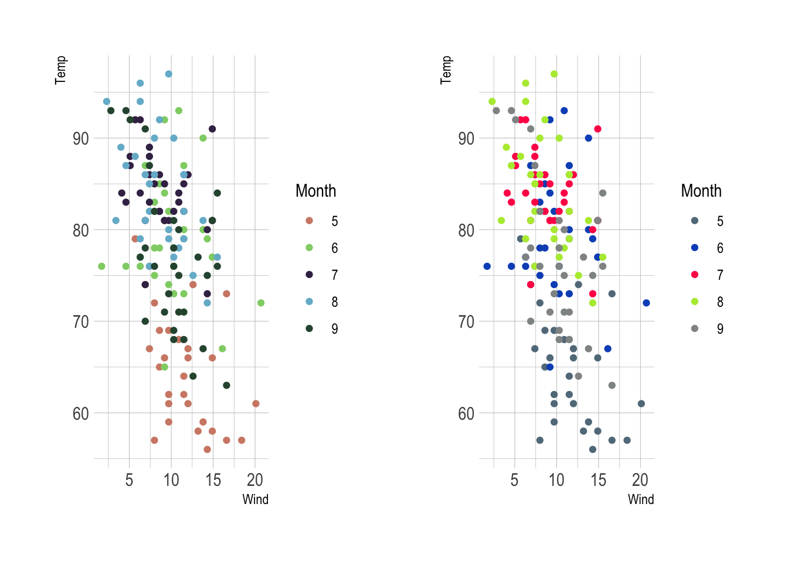

# 包引入
library(tidyverse)
library(hrbrthemes)
library(datasets)
library(patchwork) #控制多张图表的位置摆放背景介绍
ggplot 好用归好用，但是默认主题给人的感觉还是过于呆板，一直想找一个比较美观的 ggplot 主题拓展包。
恰好看到 Awesome ggplot2 有收集 ggplot 的主题拓展，遂逐一尝试了一下。
经过筛选，发现只有 hrbrthemes 满足自己的要求：第一，风格简约，足够美观；第二，语法与 ggplot2 保持一致，符合使用习惯。
使用方法
使用 datasets package 内置的 airquality 数据集来做测试。
knitr::kable(head(airquality))| Ozone | Solar.R | Wind | Temp | Month | Day |
|---|---|---|---|---|---|
| 41 | 190 | 7.4 | 67 | 5 | 1 |
| 36 | 118 | 8.0 | 72 | 5 | 2 |
| 12 | 149 | 12.6 | 74 | 5 | 3 |
| 18 | 313 | 11.5 | 62 | 5 | 4 |
| NA | NA | 14.3 | 56 | 5 | 5 |
| 28 | NA | 14.9 | 66 | 5 | 6 |
内置主题函数
# ggplot默认主题作图
plot1 <- airquality %>%
ggplot(aes(x = Wind, y = Temp)) +
geom_point()
# 使用hrbrthemes的默认主题作图
plot2 <- airquality %>%
ggplot(aes(x = Wind, y = Temp)) +
geom_point() +
theme_ipsum()
# 将两张图并列对比
plot1 + plot2通过比较可以发现，theme_ipsum 将默认的背景色去掉了，并对横轴和纵轴的图例做了处理：将其字体变小，并将位置从中心处挪到边沿处。整体上变得更加简约和美观。
使用 ?theme_ipsum 可以进一步看到该主题的内置参数，挑选几个比较重要的参数展示一下。
1、grid 控制网格，默认是保留X轴和Y轴的网格，如需改变，可以直接使用 grid = '' 删除网格，或者使用 grid = 'X' 只保留X轴的网格。
airquality %>%
ggplot(aes(x = Wind, y = Temp)) +
geom_point() +
theme_ipsum(grid = 'X')2、axis 控制横纵轴的起始轴线，默认是删除的，如果需要保留，使用方法和 grid 类似：
airquality %>%
ggplot(aes(x = Wind, y = Temp)) +
geom_point() +
theme_ipsum(axis = 'XY')3、使用 base_family 控制字体。英文的主题风格，中文如果直接使用默认字体，效果一般不好。经过测试，苹果系统使用华文细黑 STXihei 字体的效果比较好。
airquality %>%
ggplot(aes(x = Wind, y = Temp)) +
geom_point() +
labs(title = '散点图', x = '风速', y = '温度') +
theme_ipsum(base_family = 'STXihei')4、除了以上参数，theme_ipsum 主题函数还可以设置如下参数：标题 plot_title_、副标题 subtitle_、分面标题 strip_text_、注释 caption_、横纵坐标值 axis_title_等。
5、除了 theme_ipsum，还有 theme_ipsum_es()、theme_tinyhand()、theme_ft_rc() 等主题风格。
plot3 <- airquality %>%
ggplot(aes(x = Wind, y = Temp)) +
geom_point() +
labs(title = '散点图', x = '风速', y = '温度') +
theme_ft_rc(base_family = 'STXihei')
plot4 <- airquality %>%
ggplot(aes(x = Wind, y = Temp)) +
geom_point() +
labs(title = '散点图', x = '风速', y = '温度') +
theme_ipsum_rc(base_family = 'STXihei')
plot3 + plot4内置色彩系统
hrbrthemes 也内置了色彩系统，方便直接调用。例如 scale_color_ipsum() 和 scale_color_ft()：
p5 <- airquality %>%
mutate(Month = as.factor(Month)) %>%
ggplot(aes(x = Wind, y = Temp)) +
geom_point(aes(color = Month)) +
scale_color_ipsum() +
theme_ipsum()
p6 <- airquality %>%
mutate(Month = as.factor(Month)) %>%
ggplot(aes(x = Wind, y = Temp)) +
geom_point(aes(color = Month)) +
scale_color_ft() +
theme_ipsum()
p5 + p6
也可以使用 ipsum_pal() 和 ft_pal() 直接返回颜色编码字符串。
scales::show_col(ipsum_pal()(9))scales::show_col(ft_pal()(9))